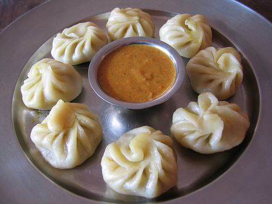

In Bhutan, momo is a popular and beloved dish, often enjoyed as a snack or meal. Bhutanese momos are typically filled with minced meat (commonly pork, beef, or chicken), cheese, or vegetables. What sets them apart is the generous use of local spices, garlic, ginger, and chili, giving them a flavorful and spicy taste that reflects Bhutanese cuisine. They are usually steamed but can also be fried or served with soup. Momos are commonly made at home during special occasions and are also widely available at restaurants and street stalls.
Welcome to Tashi MOMO Hub
At Tashi MOMO Hub, we serve fresh, handmade momos filled with flavor and love. Every momo is prepared with care using quality ingredients and traditional recipes that bring the taste of the Himalayas to your plate.
Whether you love steamed, fried, or spicy chili momo, we have something for everyone. Our goal is to give you a warm, satisfying meal that feels like home. Tashi MOMO Hub is more than just a momo shop — it is a cozy place to relax, enjoy great
food, and share moments with friends and family. Come visit us and taste the difference in every bite.
Free verse for Tashi MOMO Hub
Tashi MOMO Hub is the place to be,
With Momo soft, warm, and brings smiles and peace,
Full of flavor, made with care
The hub is cozy, full of cheer,
Where family and friends gather
near.
Flavors dance, simple and true,
where every bite brings a joy.
- TG, client